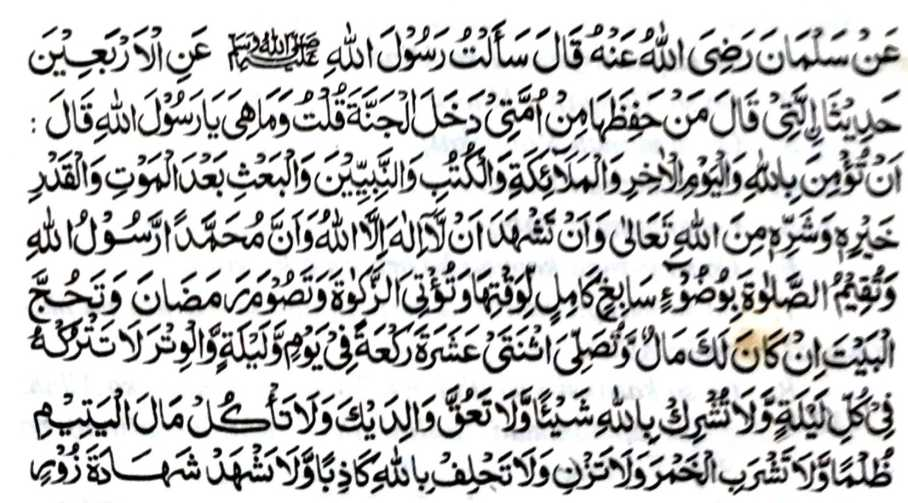
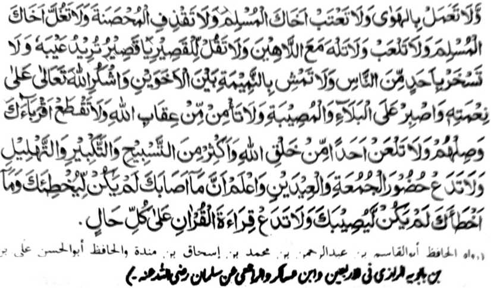
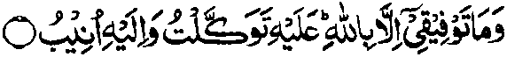

So pat polo a manga Hadith a inaloy sangkanan a miyanga o-ona a pandangan a maka-aantap ko masasalebo a bandingan na sabap ro-o na di khaparo so kapaka-kampeta on. Sa masa imanto na mimbaloy tano a madarainon na tanto reketano a maregen so pithamanan a maito a kaperomasay pantag ko Agama. Sabap gi-i, na mbegay ako sa salakao pen a pat-polo a Hadith a tanto a manga bababa ago miyapanothol ko isa a darepa a pho-on ko Rasulollah (Sallallaho ‘Alaihi wa Sallam).
Aya kapiya ini na kagaganggaman niyan ko manga ala-i kipantag a ‘enda-owan o Islam ago da-a saginda niyan [ko lagida-i a manga bandingan]. Miya-aloya-i ko [kitab a] Kanzul A’maal a inaloy ko miyanga-oona a manga Ulama ko Hadith. Si-i ko manga bago a manga Ulama, na so Maulana Qutbuddin Muhajir Makki (Rahmatullahi ‘Alaihi) na miya-aloy niyan mambo. Langagena-i o siran a mala-i paninindeg ko Islam ka an niran makowa so mala-a balas pantag ko tanto a maito a galebek. Giyangka-iya a Hadith na kati-i a pagalowin:


Miyakathitayan ko Salman (Radhiallaho ‘Anho) a pitharo iyan, “Iniza-aan aken so Rasulollah (Sallallaho ‘Alaihi wa Sallam) pantag ko pat-polo a manga Hadith a siran so pitharo iyan a sa tao a makalangag kiran a ped ko manga Ummat aken na phakasoled ko Sorga. Pitharo aken, ‘Antawa-a siran Ya Rasulollah (Sallallaho ‘Alaihi wa Sallam)?’ Pitharo iyan,
So Salman (Radhiallaho ‘Anho) na pitharo iyan a iniza-an niyan so Rasulollah (Sallallaho ‘Alaihi wa Sallam), “Antona-ai balas a imbegay ko tao a minilangag iyan angka-iya manga Hadith?” Pitharo o Rasulollah (Sallallaho ‘Alaihi wa Sallam), “Oyagen sekaniyan o Allah a ped ko manga Nabi ago so manga Ulama.”
Pamangenin tano ko Allah, a misabap ko Kala Iyan-i Limo, na rila-an Niyan so manga dosa tano ago peden tano Niyan ko manga oripen Niyan a maonoten sabap bo ko Gagao Niyan. Kena ba ini di katatalakepan o Kala o Limo Iyan. So langowan a pembatiya si-i na phangeni non a peda iran angka-iya a baradosa [so mizorat si-i] ko manga dowa-a iran.
“Go da a Taufiq aken inonta so pho-on ko Allah a si-i ako Rekaniyan sasarig ago ron ako Pagendod.”

MAULANA MUHAMMAD ZAKARIYYA KANDHLAWI
Mazaher-ul-Ulum, Saharanpur
29 Zilhaj 1348 Hijri